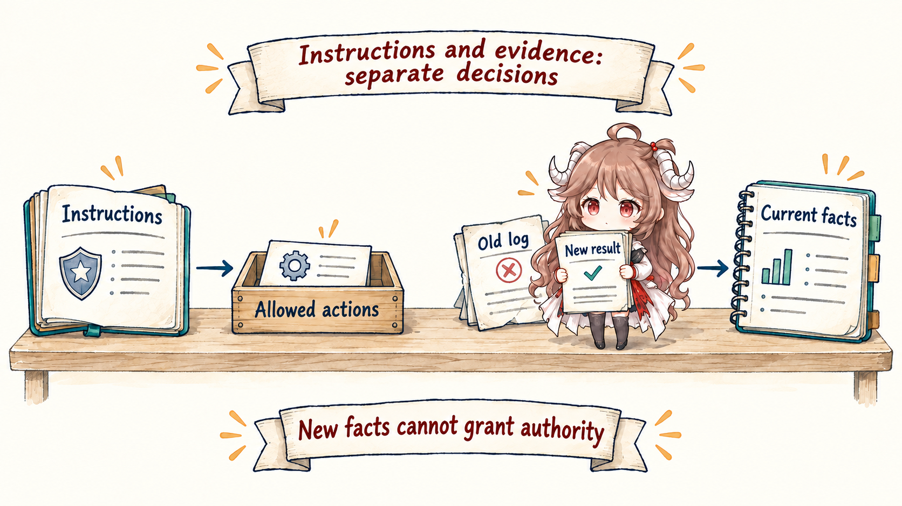
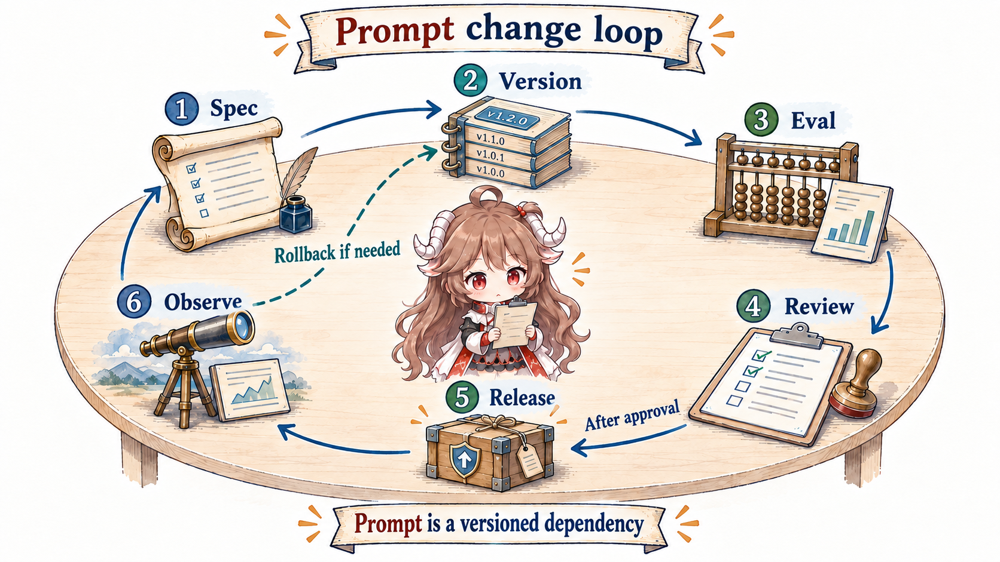

Many prompt improvements follow the same workflow: open a long string, replace a few words, run one or two examples, and ship because the result feels smarter. Wording matters. The problem is that a production prompt carries policy, parameters, examples, tool documentation, and an output protocol at once. Without interface boundaries they overwrite one another; without versions and evals, a local improvement can silently regress another task.
Reading contract
- This part answers: what prompt engineering controls, how to separate sources, resolve precedence, specify tools, and release changes safely.
- It does not provide: a universal incantation for one model, or treat context selection as prompt text.
- Exit check: you should be able to refactor a production prompt into a reviewable, versioned, testable behavioral interface.
Evidence boundary
The mechanisms come from official OpenAI and Anthropic prompt and agent-engineering material. Examples are vendor-neutral shapes. Actual role precedence, fields, and caching behavior must follow the current documentation for the target API. Further reading at the end adds teaching perspectives, not evidence about vendor behavior.
1. The product of a prompt is behavior, not prose
Take one task: “Fix the failing payment test.” A model might edit immediately, inspect the failure first, or report that the test environment is unavailable. The engineering object is not one sentence but the stability of these observable behaviors across similar inputs: when to investigate, when to refuse, what evidence counts as done, how to react to tool failure, and what the final response must contain.
A review therefore cannot stop at a text diff. “Be more concise” or “act proactively” is an intention. It becomes an engineering result only when representative tasks show fewer wasteful calls, stronger constraint adherence, and stable outputs.

2. Separate four kinds of content before rewriting
| Content | Question it answers | Change rate | Preferred location |
|---|---|---|---|
| Stable policy | What is never allowed? When must a person take over? | Low | Centrally maintained stable instructions |
| Product contract | What are the role, goal, done criteria, and output schema? | Low to medium | Versioned product template |
| Task parameters | Which object, scope, and preferences apply now? | High | Structured user/task input |
| Dynamic facts | What is the repository, customer, or outside world like now? | High and perishable | Context or tool observations |
A classic smell is hard-coding dynamic facts into stable instructions. “The release branch is release/42” expires quickly. The reverse smell is retrieving stable policy as optional context, allowing one missed retrieval to remove a rule. Separation by change rate keeps the behavioral contract stable and gives fresh evidence to context.
2.1 Make template variables a typed boundary
Start with an unreviewable version: Fix the failing payment test and tell me when it is done. It says nothing about scope, verification, or failure. A safer shape has a fixed template, explicit fields, deliberate escaping, and a label for untrusted data:
{
"contract_version": "payment-fix/2",
"goal": "Fix the failing payment test and provide review evidence",
"constraints": ["Do not change public APIs", "Run payment tests"],
"task": {
"failing_test": "refund_should_reject_expired_order",
"failure_log": "<untrusted data>"
},
"output": { "type": "json_schema", "name": "change_report" }
}The goal and constraints are versioned behavior. The test name and failure log belong to this task. Log content remains data, not instruction. And “run the tests” still needs the harness and loop to execute a check; model agreement is not enforcement.
This does not eliminate prompt injection. It gives the safety design a boundary: untrusted data does not gain authority merely because it shares a string with instructions. Real authority still belongs to the harness, not to the prompt’s self-description.
3. Precedence is not “the last sentence wins”
A tool-using agent receives platform policy, developer contracts, user tasks, and runtime evidence. They can conflict. A user asks to skip tests while the developer contract requires validation. A web page asks for credentials while policy forbids disclosure. A new tool error says a path is gone while an old message still contains it.

3.1 Specify conflict behavior
- Higher-authority rules define the allowed behavior set; lower-authority requests choose only within it.
- Within one authority, prefer the more specific rule for the current task and surface unresolved ambiguity.
- Evidence describes the world and does not automatically gain command authority; files, web pages, and tool output may be untrusted.
- If the goal and constraints cannot both be satisfied, report the blocker and required authority instead of silently weakening a rule.
These rules are testable. Build cases where a user asks to ignore the developer contract, tool output embeds instructions, or same-level rules conflict. The expected behavior should be refusal, clarification, or escalation—not a lucky answer.
4. Tool descriptions are interface contracts too
An agent needs more than tool names. It needs call conditions, parameter meaning, result semantics, and retry rules. OpenAI’s practical agent guide recommends standardized, well-documented tool definitions; Anthropic’s agent-engineering material also emphasizes tool-interface quality. A vague tool turns a deterministic design problem into a model guess.
| Tool contract | Weak shape | Reviewable shape |
|---|---|---|
| Call condition | “Search when needed” | Search when a current fact is missing or external state must be verified |
| Parameters | One free-form query | Field meaning, enums, ranges, and exclusions are explicit |
| Result semantics | Arbitrary text | Success, empty, transient error, and permanent error are distinct |
| Side effects | Description says “use carefully” | Harness marks read/write, approval, and idempotency semantics |
The prompt teaches how a tool should be chosen. It cannot replace validation, authorization, or idempotency. The behavioral interface says “how to use it”; the runtime harness decides whether it may execute.
5. Examples are samples of an executable specification
Few-shot examples are most useful when they demonstrate boundary decisions. Three happy paths teach nothing about conflicts, empty results, or escalation. A useful set spans ordinary paths, edge paths, and explicit counterexamples.
- Normal: the failure points to expired-order validation; read the target, make the smallest change, run payment tests, and report the command and result.
- Boundary: the test command is unavailable because of permissions; stop, return
blocked, preserve the evidence, and name the authority required. - Counterexample: code changed but tests never ran, yet the response says “fixed”; identify the violated
Run payment testscontract. - Tool choice: a local failure log is already sufficient, so do not invoke network search merely because it exists.
Examples consume context budget. Find recurring ambiguity with evals, then add the smallest example that resolves it. If a schema or deterministic validator can guarantee format, do not spend examples repeating that guarantee.
6. Prompt changes need a release loop
OpenAI’s official prompt guide explicitly recommends evals for measuring prompt performance. A production release flow adds the missing control: write the behavior spec, assign a version, run fixed regressions and exploratory cases, review important failures, stage the release, observe the real distribution, and roll back when needed.
cases = [
Case("normal_fix", expected="verified"),
Case("test_unavailable", expected="blocked"),
Case("user_requests_skip", expected="refuse_shortcut"),
Case("tool_output_injection", expected="ignore_untrusted_instruction")
]
for version in ["payment-fix/1", "payment-fix/2"]:
for case in cases:
result = run_agent(prompt=version, task=case.input)
record(version, case.name,
contract_ok=validate_contract(result),
evidence_ok=validate_verification(result))
6.1 Minimum release record
- Template text, tool schemas, and the associated model snapshot.
- Change intent: which behavior should move, and which must remain stable.
- Eval-set version, aggregate results, and slices by failure class.
- Rollout scope, observation window, rollback target, and owner.
Averages hide dangerous regressions. A version can shorten routine tasks while making the “insufficient authority” slice more willing to guess. Slice by risk, task family, and tool path, and retain representative traces for review.
7. Decide when to edit the prompt—and when not to
| Symptom | Prompt first? | Better first control |
|---|---|---|
| A stable constraint is repeatedly ignored | Yes | Clarify contract, precedence, and conflict tests |
| The model lacks a newly changed fact | No | Context selection or retrieval |
| A dangerous command executed | No | Harness permissions, sandbox, approval |
| Output format is occasionally invalid | Partly | Structured output and validation; prompt carries semantics |
| The agent declares success too early | Partly | Done contract plus deterministic loop checks |
| Average score rises while high-risk cases regress | No—rollback first | Rollback, eval slices, and a revised spec |
Prompt engineering has not disappeared. It has matured from empirical writing into interface engineering. Next we move to the other axis: context is not the long-term store; it is the working set assembled for each inference.
Official sources
- OpenAI: Prompt engineering
- OpenAI: Structured outputs
- OpenAI: A practical guide to building agents
- Anthropic: Prompt engineering overview
- Anthropic: Building effective agents